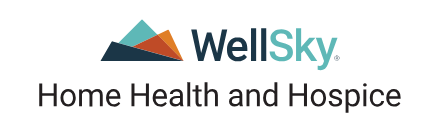
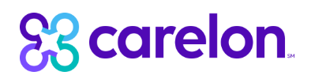
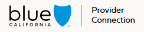
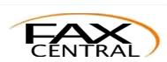

Healthcare Intake Coordinator specializing in patient referrals, insurance verification, prior authorizations, intake processing, and documentation across Home Health and Hospice operations.
I help healthcare teams streamline administrative workflows by ensuring accurate patient intake, efficient insurance processing, and seamless coordination between agencies, providers, and insurance organizations. My focus is delivering organized operations that support timely patient care.
Behind every successful admission is an organized workflow. I use healthcare platforms, insurance portals, and communication systems to coordinate referrals, verify eligibility, process authorizations, and keep patient information moving accurately between providers, agencies, and insurance organizations.
Supporting Every Step of the Patient Journey
Behind every platform below plays a role in helping patients move from referral to admission with accuracy and efficiency. every successful admission is an organized workflow. I use healthcare platforms, insurance portals, and communication systems to coordinate referrals, verify eligibility, process authorizations, and keep patient information moving accurately between providers, agencies, and insurance organizations.
Supporting patient referrals, admissions, documentation, insurance verification, and coordinated healthcare workflows.



Connecting healthcare teams, providers, agencies, and insurance organizations through efficient communication and daily collaboration.

I specialize in coordinating healthcare workflows across agencies, insurance providers, and clinical teams — ensuring accuracy in intake, eligibility, authorizations, and documentation without direct patient-facing interaction.
I coordinate with agency owners, clinical staff, insurance CSRs, IPA/medical groups, physicians, hospitals, and specialists to ensure smooth operational flow and accurate case processing.
Experienced in eligibility verification, prior authorization requests, follow-ups, and tracking approvals across multiple insurance portals and healthcare systems.
Skilled in navigating EMR/EHR systems, healthcare portals, and communication tools to maintain accurate documentation and streamline intake coordination processes.
From customer support to healthcare intake coordination, my experience has evolved around organized workflows, accurate documentation, insurance processing, and dependable operational support.
Responsible for end-to-end intake coordination including eligibility verification, authorization processing, patient chart creation, and documentation management across multiple healthcare systems.
Provided customer support for reservations, itinerary changes, refunds, and structured airline operations.
Supported backend insurance operations through structured data processing, account updates, and documentation management while maintaining accuracy within internal systems.
A structured breakdown of the healthcare systems, platforms, communication tools, and operational workflows I use daily to support patient intake, insurance processing, and healthcare administration.
Beyond completing administrative tasks, I focus on creating organized, accurate, and dependable workflows that help healthcare teams operate more efficiently every day.
Verify patient eligibility and benefits through insurance portals and direct coordination with insurance representatives.
Reduces admission delays and prevents eligibility-related claim issues before intake.
Ensures patients are financially and administratively cleared before admission, minimizing rework for clinical teams.Manage prior authorization workflows by submitting requests, tracking approvals, following up with insurance providers, maintaining accurate documentation, and preparing appeal submissions when required.
Speeds up approval cycles and reduces treatment delays caused by pending authorizations.
Helps ensure timely care delivery by preventing authorization bottlenecks and missed follow-ups.Organize referrals, prepare patient charts, and ensure intake documentation is complete before admission.
Ensures smooth patient onboarding and reduces intake errors that delay admission.
Creates a structured intake process that improves agency efficiency and patient processing speed.Coordinate with agency staff, physicians, hospitals, specialists, and insurance teams to keep every case moving forward.
Prevents miscommunication and keeps patient cases moving without operational delays.
Improves coordination between clinical and administrative teams across multiple healthcare systems.Maintain organized records with attention to detail while reducing administrative errors and delays.
Reduces billing errors and compliance risks caused by inaccurate documentation.
Ensures clean, audit-ready records for clinical and insurance review processes.Help streamline backend processes so clinical teams can focus more on patient care.
Improves turnaround time for intake and reduces administrative workload for clinical staff.
Supports smoother healthcare operations by eliminating unnecessary process delays.This portfolio highlights my experience in healthcare operations and intake coordination, which remains my primary professional focus. Alongside this, I maintain a separate personal web development project where I explore frontend design, UI structure, and interactive layout systems as part of my ongoing skill development. I’m open to feedback, collaboration, and suggestions for improvement.
Collaboration: Exploring frontend and UI structure ideas
Feedback: Always appreciated as I refine the design system
Purpose: Hands-on learning in modern web layout and interaction design
A personal frontend exploration project where I experiment with scroll-based layouts, interactive UI patterns, and structured content flow. This project is part of my ongoing learning process in modern frontend development and interface design.
Frontend Development • WIPI’m actively seeking remote healthcare operations opportunities focused on intake coordination, insurance workflows, EMR system support, and provider coordination. My goal is to contribute to structured, efficient, and reliable healthcare processes within fully remote teams.
Email: hdbalbon@outlook.com
Phone: +63 953 996 0601
LinkedIn: linkedin.com/in/heaven-desiree-balbon-6660253b9